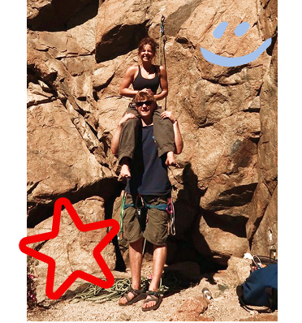
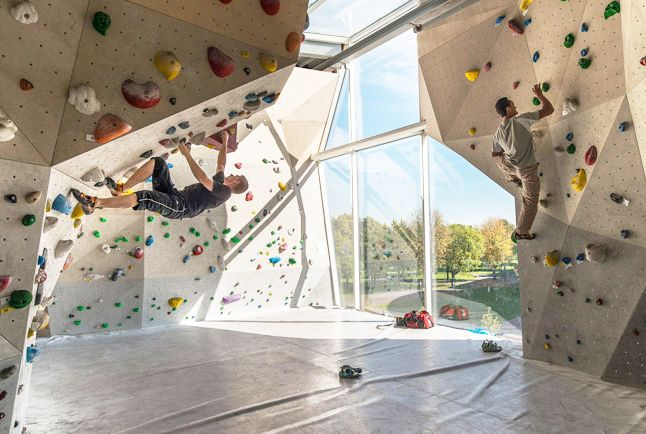

Om

Vi vill att klättring i Jönköping ska vara något man bara gör — inte något man först måste bli tillräckligt vältränad för.
Getagrip startades 2019 av Nora och Mikael, som tröttnade på att köra till Göteborg varje helg för att komma åt en vettig vägg. De hittade en gammal plåtverkstad på Kabelvägen, lånade pengar av alldeles för många släktingar och skruvade upp de första lederna själva. Hallen öppnade med fyrtio problem och en kaffebryggare.
Sedan dess har vi byggt ut två gånger. Idag har vi 1 400 kvadratmeter klätteryta, ett eget ledbyggarlag, yogasal och ungefär tvåtusen medlemmar — från sjuåringar i barngruppen till ett gäng pensionärer som tagit över tisdagsförmiddagarna.
Det vi bryr oss mest om är hur det känns att komma in genom dörren första gången. Därför har vi alltid personal ute i hallen, och därför lägger vi lika mycket krut på de lättaste lederna som på de svåraste.

Bouldering
Boulder är låga klätterväggar, där man klättar utan rep och istället landar på en tjock matta. Vi har ett brett utbud av problem i olika grader på väggar i alla möjliga lutningar. Lederna byggs om kontinuerligt av erfarna ledbyggare

Repklättring
På våra repväggar kommer du kunna klättra på topprep, autobelay och lead! Våra väggar är toppmoderna och har massor av roliga strukturer och lutningar som kommer utmana nybörjare såväl som proffs!

Hitta hit!
Kabelvägen 4, 553 02 Jönköping. Buss 26 stannar vid Hedenstorp, tre minuters promenad bort, och det finns gratis parkering på baksidan av huset. Cykelställ under tak står direkt vid entrén.